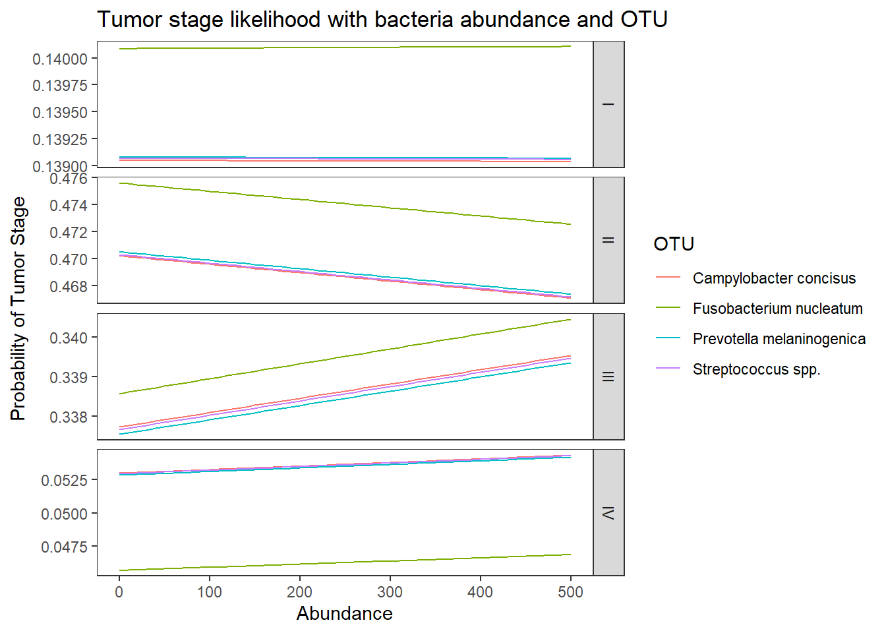

Results Output for Question 3
Last updated: 2021-02-04
Checks: 6 1
Knit directory: esoph-micro-cancer-workflow/
This reproducible R Markdown analysis was created with workflowr (version 1.6.2). The Checks tab describes the reproducibility checks that were applied when the results were created. The Past versions tab lists the development history.
The R Markdown file has unstaged changes. To know which version of the R Markdown file created these results, you’ll want to first commit it to the Git repo. If you’re still working on the analysis, you can ignore this warning. When you’re finished, you can run wflow_publish to commit the R Markdown file and build the HTML.
Great job! The global environment was empty. Objects defined in the global environment can affect the analysis in your R Markdown file in unknown ways. For reproduciblity it’s best to always run the code in an empty environment.
The command set.seed(20200916) was run prior to running the code in the R Markdown file. Setting a seed ensures that any results that rely on randomness, e.g. subsampling or permutations, are reproducible.
Great job! Recording the operating system, R version, and package versions is critical for reproducibility.
Nice! There were no cached chunks for this analysis, so you can be confident that you successfully produced the results during this run.
Great job! Using relative paths to the files within your workflowr project makes it easier to run your code on other machines.
Great! You are using Git for version control. Tracking code development and connecting the code version to the results is critical for reproducibility.
The results in this page were generated with repository version b9a498d. See the Past versions tab to see a history of the changes made to the R Markdown and HTML files.
Note that you need to be careful to ensure that all relevant files for the analysis have been committed to Git prior to generating the results (you can use wflow_publish or wflow_git_commit). workflowr only checks the R Markdown file, but you know if there are other scripts or data files that it depends on. Below is the status of the Git repository when the results were generated:
Ignored files:
Ignored: .Rhistory
Ignored: .Rproj.user/
Ignored: data/
Unstaged changes:
Modified: analysis/results-question-3.Rmd
Note that any generated files, e.g. HTML, png, CSS, etc., are not included in this status report because it is ok for generated content to have uncommitted changes.
These are the previous versions of the repository in which changes were made to the R Markdown (analysis/results-question-3.Rmd) and HTML (docs/results-question-3.html) files. If you’ve configured a remote Git repository (see ?wflow_git_remote), click on the hyperlinks in the table below to view the files as they were in that past version.
| File | Version | Author | Date | Message |
|---|---|---|---|---|
| Rmd | b9a498d | noah-padgett | 2021-01-26 | fixed issue with subsetting |
| html | b9a498d | noah-padgett | 2021-01-26 | fixed issue with subsetting |
| Rmd | 6585907 | noah-padgett | 2021-01-21 | updated figures with dendrogram |
Question 3
Q3: Is fuso associated with tumor stage (pTNM) in either data set? Does X bacteria predict stage? Multivariable w/ age, sex, BMI, history of Barrett'sAdd to this analysis:
- Fusobacterium nucleatum
- Streptococcus sanguinis
- Campylobacter concisus
- Prevotella spp.
TCGA drop “not reported” from tumor stage.
NCI 16s data
Double Checking Data
# in long format
table(dat.16s$tumor.stage)
0 1 I II III IV
11088 264 6336 13464 6072 2640
not reported
1848 # by subject
dat <- dat.16s %>% filter(OTU == "Fusobacterium_nucleatum")
table(dat$tumor.stage)
0 1 I II III IV
42 1 24 51 23 10
not reported
7 sum(table(dat$tumor.stage)) # sample size met[1] 158dat.16s.s$Abundancej <- dat.16s.s$Abundance+0.01
mean.dat <- dat.16s.s %>%
group_by(tumor.stage, OTU) %>%
summarize(M = mean(Abundance))`summarise()` has grouped output by 'tumor.stage'. You can override using the `.groups` argument.ggplot(dat.16s.s, aes(x=tumor.stage, y=Abundancej))+
geom_violin()+
geom_jitter(alpha=0.25,width = 0.25)+
geom_point(data=mean.dat, aes(x=tumor.stage, y = M), size=2, alpha =0.9, color="red")+
labs(x="Tumor Stage",
title="Distribution of abundance across tumor stage",
subtitle="Red dot is average abundnace")+
scale_y_continuous(
breaks=c(0, 10, 100, 200, 300, 400, 500),
limits = c(0,500),
trans="sqrt")+
facet_wrap(.~OTU, nrow=1)+
theme_classic()
Stage “1” has only 1 unique sample and will be dropped from subsequent analyses.
dat.16s.s <- dat.16s.s %>%
filter(tumor.stage != "1")%>%
mutate(tumor.stage = droplevels(tumor.stage, exclude="1"))Multinomial Logistic Regression
Model 1: TS ~ Abundance
fit <- nnet::multinom(tumor.stage ~ OTU, data=dat.16s.s)# weights: 30 (20 variable)
initial value 1125.224947
iter 10 value 1005.376265
final value 1005.153918
convergedsummary(fit)Call:
nnet::multinom(formula = tumor.stage ~ OTU, data = dat.16s.s)
Coefficients:
(Intercept) OTUStreptococcus spp. OTUCampylobacter concisus
I -0.5596573 4.026999e-05 5.690943e-05
II 0.1941426 3.995800e-05 -9.227993e-06
III -0.6022530 9.552912e-05 1.105414e-04
IV -1.4353505 3.339310e-04 3.376027e-04
not reported -1.7915909 -2.164854e-04 -2.141523e-04
OTUPrevotella melaninogenica
I 3.976448e-05
II 4.157416e-05
III 9.500459e-05
IV 3.338067e-04
not reported -2.165636e-04
Std. Errors:
(Intercept) OTUStreptococcus spp. OTUCampylobacter concisus
I 0.2558825 0.3618742 0.3618723
II 0.2083657 0.2946756 0.2946764
III 0.2594013 0.3668473 0.3668454
IV 0.3518980 0.4976310 0.4976292
not reported 0.4082124 0.5773327 0.5773309
OTUPrevotella melaninogenica
I 0.3618743
II 0.2946755
III 0.3668474
IV 0.4976310
not reported 0.5773328
Residual Deviance: 2010.308
AIC: 2050.308 # obtain significance tests
z <- summary(fit)$coefficients/summary(fit)$standard.errors
z (Intercept) OTUStreptococcus spp. OTUCampylobacter concisus
I -2.1871652 0.0001112817 1.572638e-04
II 0.9317397 0.0001356000 -3.131568e-05
III -2.3217038 0.0002604057 3.013297e-04
IV -4.0788818 0.0006710414 6.784222e-04
not reported -4.3888697 -0.0003749750 -3.709351e-04
OTUPrevotella melaninogenica
I 0.0001098848
II 0.0001410845
III 0.0002589758
IV 0.0006707916
not reported -0.0003751106p <- (1 - pnorm(abs(z), 0, 1)) * 2
p (Intercept) OTUStreptococcus spp. OTUCampylobacter concisus
I 2.873046e-02 0.9999112 0.9998745
II 3.514711e-01 0.9998918 0.9999750
III 2.024889e-02 0.9997922 0.9997596
IV 4.525283e-05 0.9994646 0.9994587
not reported 1.139413e-05 0.9997008 0.9997040
OTUPrevotella melaninogenica
I 0.9999123
II 0.9998874
III 0.9997934
IV 0.9994648
not reported 0.9997007## extract the coefficients from the model and exponentiate
exp(coef(fit)) # interpret as relative risks (Intercept) OTUStreptococcus spp. OTUCampylobacter concisus
I 0.5714048 1.0000403 1.0000569
II 1.2142694 1.0000400 0.9999908
III 0.5475766 1.0000955 1.0001105
IV 0.2380319 1.0003340 1.0003377
not reported 0.1666948 0.9997835 0.9997859
OTUPrevotella melaninogenica
I 1.0000398
II 1.0000416
III 1.0000950
IV 1.0003339
not reported 0.9997835# save fitted logits
pp <- fitted(fit)
# preditive data
dotu <- data.frame(OTU = c("Fusobacterium nucleatum", "Streptococcus spp.", "Campylobacter concisus", "Prevotella melaninogenica"))
predict(fit, newdata = dotu, "probs") # only TINY differences 0 I II III IV not reported
1 0.2675244 0.1528647 0.3248466 0.1464901 0.06367934 0.04459491
2 0.2675124 0.1528640 0.3248451 0.1464975 0.06369775 0.04458326
3 0.2675153 0.1528682 0.3248326 0.1465013 0.06369868 0.04458385
4 0.2675123 0.1528639 0.3248455 0.1464974 0.06369772 0.04458324## store the predicted probabilities for each value of ses
pp.otu <-cbind(dotu, predict(fit, newdata = dotu, "probs", se = TRUE))
## calculate the mean probabilities within each level of OTU
by(pp.otu[, 2:7], pp.otu$OTU, colMeans)pp.otu$OTU: Campylobacter concisus
0 I II III IV not reported
0.26751530 0.15286823 0.32483264 0.14650130 0.06369868 0.04458385
------------------------------------------------------------
pp.otu$OTU: Fusobacterium nucleatum
0 I II III IV not reported
0.26752435 0.15286471 0.32484663 0.14649006 0.06367934 0.04459491
------------------------------------------------------------
pp.otu$OTU: Prevotella melaninogenica
0 I II III IV not reported
0.26751228 0.15286389 0.32484549 0.14649737 0.06369772 0.04458324
------------------------------------------------------------
pp.otu$OTU: Streptococcus spp.
0 I II III IV not reported
0.26751238 0.15286402 0.32484508 0.14649750 0.06369775 0.04458326 Model 2: TS ~ OTU + Abundance
fit <- nnet::multinom(tumor.stage ~ OTU + Abundance, data=dat.16s.s)# weights: 36 (25 variable)
initial value 1125.224947
iter 10 value 1036.591057
iter 20 value 1003.572457
iter 30 value 1002.703847
final value 1002.703282
convergedsummary(fit)Call:
nnet::multinom(formula = tumor.stage ~ OTU + Abundance, data = dat.16s.s)
Coefficients:
(Intercept) OTUStreptococcus spp. OTUCampylobacter concisus
I -0.6019482 -0.29770929 0.036768981
II 0.1493511 -0.31416197 0.038932244
III -0.6047665 -0.01998832 0.002120648
IV -1.4642044 -0.20835878 0.025000279
not reported -1.8374350 -0.31744429 0.039621982
OTUPrevotella melaninogenica Abundance
I -0.024130985 0.0025034384
II -0.025266176 0.0026228398
III -0.002131836 0.0001920192
IV -0.018128606 0.0018251074
not reported -0.025219107 0.0026488611
Std. Errors:
(Intercept) OTUStreptococcus spp. OTUCampylobacter concisus
I 0.2579305 0.4212163 0.3630178
II 0.2100176 0.3418866 0.2956093
III 0.2608095 0.4170931 0.3675700
IV 0.3543782 0.5765068 0.4989885
not reported 0.4118364 0.6771845 0.5793856
OTUPrevotella melaninogenica Abundance
I 0.3624989 0.001743779
II 0.2953697 0.001461370
III 0.3673553 0.001912311
IV 0.4982317 0.002392437
not reported 0.5780688 0.002659606
Residual Deviance: 2005.407
AIC: 2055.407 # obtain significance tests
z <- summary(fit)$coefficients/summary(fit)$standard.errors
z (Intercept) OTUStreptococcus spp. OTUCampylobacter concisus
I -2.3337612 -0.70678481 0.101287006
II 0.7111362 -0.91890701 0.131701681
III -2.3188053 -0.04792294 0.005769373
IV -4.1317569 -0.36141601 0.050101911
not reported -4.4615648 -0.46877073 0.068386206
OTUPrevotella melaninogenica Abundance
I -0.066568429 1.4356399
II -0.085540865 1.7947819
III -0.005803199 0.1004121
IV -0.036385893 0.7628655
not reported -0.043626480 0.9959599p <- (1 - pnorm(abs(z), 0, 1)) * 2
p (Intercept) OTUStreptococcus spp. OTUCampylobacter concisus
I 1.960823e-02 0.4797002 0.9193226
II 4.769998e-01 0.3581442 0.8952203
III 2.040560e-02 0.9617777 0.9953967
IV 3.600011e-05 0.7177885 0.9600412
not reported 8.136333e-06 0.6392335 0.9454782
OTUPrevotella melaninogenica Abundance
I 0.9469253 0.15110484
II 0.9318314 0.07268846
III 0.9953697 0.92001713
IV 0.9709747 0.44554363
not reported 0.9652021 0.31926963## extract the coefficients from the model and exponentiate
exp(coef(fit)) # interpret as relative risks (Intercept) OTUStreptococcus spp. OTUCampylobacter concisus
I 0.5477435 0.7425172 1.037453
II 1.1610806 0.7304007 1.039700
III 0.5462019 0.9802101 1.002123
IV 0.2312619 0.8119157 1.025315
not reported 0.1592253 0.7280072 1.040417
OTUPrevotella melaninogenica Abundance
I 0.9761578 1.002507
II 0.9750503 1.002626
III 0.9978704 1.000192
IV 0.9820347 1.001827
not reported 0.9750962 1.002652# save fitted logits
pp <- fitted(fit)
# predit data
dotu <- data.frame(OTU = c("Fusobacterium nucleatum", "Streptococcus spp.", "Campylobacter concisus", "Prevotella melaninogenica"), Abundance = mean(dat.16s.s$Abundance))
predict(fit, newdata = dotu, "probs") # bigger differences 0 I II III IV not reported
1 0.2555485 0.1574622 0.3356602 0.1408471 0.06439470 0.04608727
2 0.3036720 0.1389358 0.2913349 0.1640584 0.06212873 0.03987017
3 0.2497993 0.1596845 0.3411347 0.1379707 0.06453950 0.04687126
4 0.2593699 0.1560065 0.3321798 0.1426489 0.06418347 0.04561154## look at the averaged predicted probabilities for different values of the continuous predictor variable Abundnace within each level of OTU
dabund <- data.frame(
OTU = rep(c("Fusobacterium nucleatum", "Streptococcus spp.", "Campylobacter concisus", "Prevotella melaninogenica"), each = 51),
Abundance = rep(seq(0, 500,10), 4)
)
pp.abund <-cbind(dabund, predict(fit, newdata = dabund, "probs", se = TRUE))
## calculate the mean probabilities within each level of OTU
by(pp.abund[, 3:8], pp.abund$OTU, colMeans)pp.abund$OTU: Campylobacter concisus
0 I II III IV not reported
0.18073001 0.18620713 0.40831655 0.10306018 0.06526185 0.05642428
------------------------------------------------------------
pp.abund$OTU: Fusobacterium nucleatum
0 I II III IV not reported
0.18548588 0.18439024 0.40347761 0.10555599 0.06537256 0.05571772
------------------------------------------------------------
pp.abund$OTU: Prevotella melaninogenica
0 I II III IV not reported
0.18865464 0.18318669 0.40040147 0.10713583 0.06532547 0.05529589
------------------------------------------------------------
pp.abund$OTU: Streptococcus spp.
0 I II III IV not reported
0.22655381 0.16863991 0.36313616 0.12645569 0.06522761 0.04998682 ## melt data set to long for ggplot2
lpp <- melt(pp.abund, id.vars = c("OTU", "Abundance"), value.name = "probability")
## plot predicted probabilities across Abundance values for each level of OTU
## facetted by tumor.stage
ggplot(lpp, aes(x = Abundance, y = probability, colour = OTU)) +
geom_line() +
facet_grid(variable ~., scales="free")+
labs(y="Probability of Tumor Stage",
title="Tumor stage likelihood with bacteria abundance and OTU")+
theme(
panel.grid = element_blank()
)
Model 3: TS ~ OTU + Abundance + OTU:Abundnace
fit <- nnet::multinom(tumor.stage ~ OTU + Abundance + OTU:Abundance, data=dat.16s.s)# weights: 54 (40 variable)
initial value 1125.224947
iter 10 value 1090.589208
iter 20 value 1039.256245
iter 30 value 996.413681
iter 40 value 992.928158
iter 50 value 991.429386
iter 60 value 991.127307
iter 70 value 990.723318
final value 990.722744
convergedsummary(fit)Call:
nnet::multinom(formula = tumor.stage ~ OTU + Abundance + OTU:Abundance,
data = dat.16s.s)
Coefficients:
(Intercept) OTUStreptococcus spp. OTUCampylobacter concisus
I -0.59669951 -0.26093056 -0.02367244
II -0.04925272 0.09502819 0.20651525
III -0.77567930 0.34796855 0.26293966
IV -1.04748982 -0.51444215 -0.38084125
not reported -1.70228029 -0.40001948 -0.08221021
OTUPrevotella melaninogenica Abundance
I -0.13897798 0.005360968
II 0.13369547 0.017833598
III 0.05111365 0.015423279
IV -0.71749336 -0.414573888
not reported -0.37627244 -0.022283246
OTUStreptococcus spp.:Abundance
I -0.00333574
II -0.01676429
III -0.01689038
IV 0.41549620
not reported 0.02438395
OTUCampylobacter concisus:Abundance
I 0.0185943761
II -0.0004488833
III -0.1622707887
IV 0.4097502356
not reported 0.0170529960
OTUPrevotella melaninogenica:Abundance
I 0.001887565
II -0.012888890
III -0.010003735
IV 0.425826443
not reported 0.032563443
Std. Errors:
(Intercept) OTUStreptococcus spp. OTUCampylobacter concisus
I 0.2706201 0.4738624 0.3783916
II 0.2281113 0.3810820 0.3128107
III 0.2792175 0.4573298 0.3880796
IV 0.3761363 0.6418971 0.5206815
not reported 0.4330984 0.7670192 0.6017282
OTUPrevotella melaninogenica Abundance
I 0.4029752 0.012475637
II 0.3320564 0.009770337
III 0.4104489 0.010117141
IV 0.5654752 0.363818099
not reported 0.6506491 0.047707083
OTUStreptococcus spp.:Abundance
I 0.012623695
II 0.009903424
III 0.010350314
IV 0.363828064
not reported 0.047801354
OTUCampylobacter concisus:Abundance
I 0.02927336
II 0.02727100
III 0.17685556
IV 0.36829726
not reported 0.08268464
OTUPrevotella melaninogenica:Abundance
I 0.01392258
II 0.01129880
III 0.01205157
IV 0.36388004
not reported 0.04830831
Residual Deviance: 1981.445
AIC: 2061.445 # obtain significance tests
z <- summary(fit)$coefficients/summary(fit)$standard.errors
z (Intercept) OTUStreptococcus spp. OTUCampylobacter concisus
I -2.2049339 -0.5506462 -0.06256069
II -0.2159152 0.2493642 0.66019236
III -2.7780470 0.7608701 0.67754060
IV -2.7848677 -0.8014402 -0.73142846
not reported -3.9304699 -0.5215247 -0.13662350
OTUPrevotella melaninogenica Abundance
I -0.3448798 0.4297150
II 0.4026288 1.8252797
III 0.1245311 1.5244702
IV -1.2688326 -1.1395087
not reported -0.5783032 -0.4670847
OTUStreptococcus spp.:Abundance
I -0.2642443
II -1.6927768
III -1.6318716
IV 1.1420125
not reported 0.5101100
OTUCampylobacter concisus:Abundance
I 0.6351980
II -0.0164601
III -0.9175329
IV 1.1125530
not reported 0.2062414
OTUPrevotella melaninogenica:Abundance
I 0.1355758
II -1.1407307
III -0.8300775
IV 1.1702385
not reported 0.6740754p <- (1 - pnorm(abs(z), 0, 1)) * 2
p (Intercept) OTUStreptococcus spp. OTUCampylobacter concisus
I 2.745873e-02 0.5818762 0.9501163
II 8.290538e-01 0.8030791 0.5091304
III 5.468671e-03 0.4467347 0.4980630
IV 5.354957e-03 0.4228768 0.4645175
not reported 8.478001e-05 0.6020013 0.8913284
OTUPrevotella melaninogenica Abundance
I 0.7301848 0.66740297
II 0.6872214 0.06795883
III 0.9008948 0.12739130
IV 0.2045008 0.25449104
not reported 0.5630595 0.64043931
OTUStreptococcus spp.:Abundance
I 0.79159164
II 0.09049797
III 0.10270655
IV 0.25344882
not reported 0.60997441
OTUCampylobacter concisus:Abundance
I 0.5252993
II 0.9868673
III 0.3588635
IV 0.2659004
not reported 0.8366023
OTUPrevotella melaninogenica:Abundance
I 0.8921567
II 0.2539820
III 0.4064950
IV 0.2419050
not reported 0.5002633## extract the coefficients from the model and exponentiate
exp(coef(fit)) # interpret as relative risks (Intercept) OTUStreptococcus spp. OTUCampylobacter concisus
I 0.5506260 0.7703344 0.9766056
II 0.9519405 1.0996899 1.2293865
III 0.4603909 1.4161877 1.3007482
IV 0.3508173 0.5978340 0.6832864
not reported 0.1822674 0.6703070 0.9210783
OTUPrevotella melaninogenica Abundance
I 0.8702472 1.0053754
II 1.1430447 1.0179936
III 1.0524425 1.0155428
IV 0.4879739 0.6606217
not reported 0.6864153 0.9779632
OTUStreptococcus spp.:Abundance
I 0.9966698
II 0.9833755
III 0.9832515
IV 1.5151224
not reported 1.0246837
OTUCampylobacter concisus:Abundance
I 1.0187683
II 0.9995512
III 0.8502109
IV 1.5064415
not reported 1.0171992
OTUPrevotella melaninogenica:Abundance
I 1.0018893
II 0.9871938
III 0.9900461
IV 1.5308551
not reported 1.0330994# save fitted logits
pp <- fitted(fit)
# predit data
gmeans <- dat.16s.s %>% group_by(OTU) %>% summarise(M = mean(Abundance))
dotu <- data.frame(OTU = c("Fusobacterium nucleatum", "Streptococcus spp.", "Campylobacter concisus", "Prevotella melaninogenica"), Abundance = gmeans$M)
predict(fit, newdata = dotu, "probs") # bigger differences 0 I II III IV not reported
1 0.2742667 0.1662494 0.3594195 0.1664778 5.703835e-05 0.03352950
2 0.2692405 0.1518491 0.3276064 0.1428078 6.429135e-02 0.04420488
3 0.2763845 0.1568249 0.3363098 0.1190824 6.553912e-02 0.04585922
4 0.2639438 0.1540951 0.3286240 0.1482418 6.139738e-02 0.04369800## look at the averaged predicted probabilities for different values of the continuous predictor variable Abundnace within each level of OTU
dabund <- data.frame(
OTU = rep(c("Fusobacterium nucleatum", "Streptococcus spp.", "Campylobacter concisus", "Prevotella melaninogenica"), each = 51),
Abundance = rep(seq(0, 500,10), 4)
)
pp.abund <-cbind(dabund, predict(fit, newdata = dabund, "probs", se = TRUE))
## calculate the mean probabilities within each level of OTU
by(pp.abund[, 3:8], pp.abund$OTU, colMeans)pp.abund$OTU: Campylobacter concisus
0 I II III IV not reported
0.044166453 0.646759905 0.290804978 0.004111035 0.008386006 0.005771623
------------------------------------------------------------
pp.abund$OTU: Fusobacterium nucleatum
0 I II III IV not reported
0.054825510 0.046476481 0.708319996 0.184358597 0.002000020 0.004019395
------------------------------------------------------------
pp.abund$OTU: Prevotella melaninogenica
0 I II III IV not reported
0.1006484 0.1888815 0.2510530 0.1237848 0.2187111 0.1169212
------------------------------------------------------------
pp.abund$OTU: Streptococcus spp.
0 I II III IV not reported
0.24877956 0.17729604 0.33879008 0.11761193 0.06536973 0.05215265 ## melt data set to long for ggplot2
lpp <- melt(pp.abund, id.vars = c("OTU", "Abundance"), value.name = "probability")
## plot predicted probabilities across Abundance values for each level of OTU
## facetted by tumor.stage
ggplot(lpp, aes(x = Abundance, y = probability, colour = OTU)) +
geom_line() +
facet_grid(variable ~., scales="free")+
labs(y="Probability of Tumor Stage",
title="Tumor stage likelihood with bacteria abundance and OTU")+
theme(
panel.grid = element_blank()
)
TCGA RNAseq data
Double Checking Data
# in long format
table(dat.rna$tumor.stage)
I II III IV not reported
16359 55309 39729 6232 17138 # by subject
dat <- dat.rna %>% filter(OTU == "Fusobacterium nucleatum")
table(dat$tumor.stage)
I II III IV not reported
21 71 51 8 22 sum(table(dat$tumor.stage)) # sample size met[1] 173dat.rna.s$Abundancej <- dat.rna.s$Abundance+0.01
mean.dat <- dat.rna.s %>%
group_by(tumor.stage, OTU) %>%
summarize(M = mean(Abundance))`summarise()` has grouped output by 'tumor.stage'. You can override using the `.groups` argument.ggplot(dat.rna.s, aes(x=tumor.stage, y=Abundancej))+
geom_violin()+
geom_jitter(alpha=0.25,width = 0.25)+
geom_point(data=mean.dat, aes(x=tumor.stage, y = M), size=2, alpha =0.9, color="red")+
labs(x="Tumor Stage",
title="Distribution of abundance across tumor stage",
subtitle="Red dot is average abundnace")+
scale_y_continuous(
breaks=c(0, 100, 1000, 10000, 100000, 150000),
#limits = c(0,500),
trans="pseudo_log")+
facet_wrap(.~OTU, nrow=1)+
theme_classic()
Multinomial Logistic Regression
Model 1: TS ~ Abundance
fit <- nnet::multinom(tumor.stage ~ OTU, data=dat.rna.s)# weights: 25 (16 variable)
initial value 2505.894830
iter 10 value 2169.658898
final value 2157.953669
convergedsummary(fit)Call:
nnet::multinom(formula = tumor.stage ~ OTU, data = dat.rna.s)
Coefficients:
(Intercept) OTUStreptococcus spp. OTUCampylobacter concisus
II 1.21814839 3.650884e-05 4.293757e-06
III 0.88731491 6.336748e-06 1.097171e-04
IV -0.96505808 1.423347e-05 -8.499898e-05
not reported 0.04652072 -2.047866e-05 6.233591e-05
OTUPrevotella melaninogenica
II 1.491934e-04
III -2.261544e-05
IV -8.737889e-05
not reported 5.797583e-05
Std. Errors:
(Intercept) OTUStreptococcus spp. OTUCampylobacter concisus
II 0.2484024 0.2683053 0.3512973
III 0.2592812 0.2800559 0.3666795
IV 0.4154712 0.4487604 0.5875797
not reported 0.3050797 0.3295244 0.4314487
OTUPrevotella melaninogenica
II 0.3512961
III 0.3666848
IV 0.5875829
not reported 0.4314511
Residual Deviance: 4315.907
AIC: 4347.907 # obtain significance tests
z <- summary(fit)$coefficients/summary(fit)$standard.errors
z (Intercept) OTUStreptococcus spp. OTUCampylobacter concisus
II 4.9039323 1.360720e-04 1.222258e-05
III 3.4222112 2.262672e-05 2.992181e-04
IV -2.3228036 3.171732e-05 -1.446595e-04
not reported 0.1524871 -6.214612e-05 1.444805e-04
OTUPrevotella melaninogenica
II 4.246942e-04
III -6.167541e-05
IV -1.487090e-04
not reported 1.343741e-04p <- (1 - pnorm(abs(z), 0, 1)) * 2
p (Intercept) OTUStreptococcus spp. OTUCampylobacter concisus
II 9.393689e-07 0.9998914 0.9999902
III 6.211403e-04 0.9999819 0.9997613
IV 2.018971e-02 0.9999747 0.9998846
not reported 8.788028e-01 0.9999504 0.9998847
OTUPrevotella melaninogenica
II 0.9996611
III 0.9999508
IV 0.9998813
not reported 0.9998928## extract the coefficients from the model and exponentiate
exp(coef(fit)) # interpret as relative risks (Intercept) OTUStreptococcus spp. OTUCampylobacter concisus
II 3.3809218 1.0000365 1.000004
III 2.4285999 1.0000063 1.000110
IV 0.3809611 1.0000142 0.999915
not reported 1.0476198 0.9999795 1.000062
OTUPrevotella melaninogenica
II 1.0001492
III 0.9999774
IV 0.9999126
not reported 1.0000580# save fitted logits
pp <- fitted(fit)
# preditive data
dotu <- data.frame(OTU = c("Fusobacterium nucleatum", "Streptococcus spp.", "Campylobacter concisus", "Prevotella melaninogenica"))
predict(fit, newdata = dotu, "probs") # only TINY differences I II III IV not reported
1 0.1213872 0.4104005 0.2948009 0.04624379 0.1271676
2 0.1213854 0.4104094 0.2947984 0.04624376 0.1271631
3 0.1213826 0.4103867 0.2948220 0.04623810 0.1271707
4 0.1213801 0.4104380 0.2947771 0.04623707 0.1271676## store the predicted probabilities for each value of ses
pp.otu <-cbind(dotu, predict(fit, newdata = dotu, "probs", se = TRUE))
## calculate the mean probabilities within each level of OTU
by(pp.otu[, 2:6], pp.otu$OTU, colMeans)pp.otu$OTU: Campylobacter concisus
I II III IV not reported
0.1213826 0.4103867 0.2948220 0.0462381 0.1271707
------------------------------------------------------------
pp.otu$OTU: Fusobacterium nucleatum
I II III IV not reported
0.12138718 0.41040055 0.29480088 0.04624379 0.12716761
------------------------------------------------------------
pp.otu$OTU: Prevotella melaninogenica
I II III IV not reported
0.12138015 0.41043802 0.29477715 0.04623707 0.12716762
------------------------------------------------------------
pp.otu$OTU: Streptococcus spp.
I II III IV not reported
0.12138537 0.41040941 0.29479835 0.04624376 0.12716311 Model 2: TS ~ OTU + Abundance
fit <- nnet::multinom(tumor.stage ~ OTU + Abundance, data=dat.rna.s)# weights: 30 (20 variable)
initial value 2505.894830
iter 10 value 2187.209898
iter 20 value 2156.177222
iter 30 value 2154.856368
iter 30 value 2154.856366
iter 30 value 2154.856366
final value 2154.856366
convergedsummary(fit)Call:
nnet::multinom(formula = tumor.stage ~ OTU + Abundance, data = dat.rna.s)
Coefficients:
(Intercept) OTUStreptococcus spp. OTUCampylobacter concisus
II 1.22389993 -0.005365375 -0.005610842
III 0.88005998 0.006916057 0.007172288
IV -1.13005106 0.163682102 0.164640189
not reported 0.03100875 0.014915539 0.015375416
OTUPrevotella melaninogenica Abundance
II -0.004611915 -1.845362e-05
III 0.006166936 1.645888e-05
IV 0.160760060 6.227932e-05
not reported 0.013607464 2.892287e-05
Std. Errors:
(Intercept) OTUStreptococcus spp. OTUCampylobacter concisus
II 0.06528262 0.07029829 0.09577046
III 0.06872088 0.07468645 0.10257516
IV 0.08828314 0.06919437 0.01460932
not reported 0.07659641 0.07887242 0.10169916
OTUPrevotella melaninogenica Abundance
II 0.09597200 9.929516e-05
III 0.10267821 9.011621e-05
IV 0.01459417 9.001103e-05
not reported 0.10185631 9.174721e-05
Residual Deviance: 4309.713
AIC: 4349.713 # obtain significance tests
z <- summary(fit)$coefficients/summary(fit)$standard.errors
z (Intercept) OTUStreptococcus spp. OTUCampylobacter concisus
II 18.7477134 -0.07632299 -0.05858635
III 12.8062973 0.09260123 0.06992227
IV -12.8003041 2.36554091 11.26953459
not reported 0.4048329 0.18910970 0.15118528
OTUPrevotella melaninogenica Abundance
II -0.04805479 -0.1858461
III 0.06006081 0.1826407
IV 11.01536518 0.6919076
not reported 0.13359471 0.3152452p <- (1 - pnorm(abs(z), 0, 1)) * 2
p (Intercept) OTUStreptococcus spp. OTUCampylobacter concisus
II 0.0000000 0.93916214 0.9532816
III 0.0000000 0.92622036 0.9442555
IV 0.0000000 0.01800375 0.0000000
not reported 0.6856003 0.85000684 0.8798296
OTUPrevotella melaninogenica Abundance
II 0.9616726 0.8525654
III 0.9521072 0.8550800
IV 0.0000000 0.4889954
not reported 0.8937231 0.7525755## extract the coefficients from the model and exponentiate
exp(coef(fit)) # interpret as relative risks (Intercept) OTUStreptococcus spp. OTUCampylobacter concisus
II 3.4004233 0.994649 0.9944049
III 2.4110443 1.006940 1.0071981
IV 0.3230168 1.177840 1.1789688
not reported 1.0314945 1.015027 1.0154942
OTUPrevotella melaninogenica Abundance
II 0.9953987 0.9999815
III 1.0061860 1.0000165
IV 1.1744031 1.0000623
not reported 1.0137005 1.0000289# save fitted logits
pp <- fitted(fit)
# predit data
dotu <- data.frame(OTU = c("Fusobacterium nucleatum", "Streptococcus spp.", "Campylobacter concisus", "Prevotella melaninogenica"), Abundance = mean(dat.rna.s$Abundance))
predict(fit, newdata = dotu, "probs") # bigger differences I II III IV not reported
1 0.1223989 0.4150705 0.2958303 0.03990376 0.1267965
2 0.1213271 0.4092343 0.2952750 0.04658867 0.1275749
3 0.1213176 0.4091018 0.2953275 0.04662967 0.1276236
4 0.1213532 0.4096310 0.2951174 0.04646274 0.1274356## look at the averaged predicted probabilities for different values of the continuous predictor variable Abundnace within each level of OTU
dabund <- data.frame(
OTU = rep(c("Fusobacterium nucleatum", "Streptococcus spp.", "Campylobacter concisus", "Prevotella melaninogenica"), each = 51),
Abundance = rep(seq(0, 500,10), 4)
)
pp.abund <-cbind(dabund, predict(fit, newdata = dabund, "probs", se = TRUE))
## calculate the mean probabilities within each level of OTU
by(pp.abund[, 3:7], pp.abund$OTU, colMeans)pp.abund$OTU: Campylobacter concisus
I II III IV not reported
0.12126844 0.40817153 0.29570285 0.04690866 0.12794852
------------------------------------------------------------
pp.abund$OTU: Fusobacterium nucleatum
I II III IV not reported
0.12235613 0.41414970 0.29622294 0.04014477 0.12712646
------------------------------------------------------------
pp.abund$OTU: Prevotella melaninogenica
I II III IV not reported
0.12130445 0.40870080 0.29549344 0.04674087 0.12776045
------------------------------------------------------------
pp.abund$OTU: Streptococcus spp.
I II III IV not reported
0.12127805 0.40830412 0.29565054 0.04686745 0.12789984 ## melt data set to long for ggplot2
lpp <- melt(pp.abund, id.vars = c("OTU", "Abundance"), value.name = "probability")
## plot predicted probabilities across Abundance values for each level of OTU
## facetted by tumor.stage
ggplot(lpp, aes(x = Abundance, y = probability, colour = OTU)) +
geom_line() +
facet_grid(variable ~., scales="free")+
labs(y="Probability of Tumor Stage",
title="Tumor stage likelihood with bacteria abundance and OTU")+
theme(
panel.grid = element_blank()
)
Model 3: TS ~ OTU + Abundance + OTU:Abundnace
fit <- nnet::multinom(tumor.stage ~ OTU + Abundance + OTU:Abundance, data=dat.rna.s)# weights: 45 (32 variable)
initial value 2505.894830
iter 10 value 2470.269015
iter 20 value 2262.688066
iter 30 value 2164.261982
iter 40 value 2149.458456
iter 50 value 2149.039292
iter 60 value 2149.032581
iter 60 value 2149.032574
iter 60 value 2149.032574
final value 2149.032574
convergedsummary(fit)Call:
nnet::multinom(formula = tumor.stage ~ OTU + Abundance + OTU:Abundance,
data = dat.rna.s)
Coefficients:
(Intercept) OTUStreptococcus spp. OTUCampylobacter concisus
II 1.22901888 -0.04369307 -0.05207418
III 0.88447777 -0.03058220 -0.08501825
IV -1.12626064 0.25030925 0.07721200
not reported 0.03722734 -0.02064624 -0.11097986
OTUPrevotella melaninogenica Abundance
II -0.05374046 -3.189722e-05
III -0.03067363 5.709804e-06
IV 0.11646654 5.137822e-05
not reported -0.07427308 1.598728e-05
OTUStreptococcus spp.:Abundance
II 0.002059400
III 0.002047309
IV -0.010330805
not reported 0.001876313
OTUCampylobacter concisus:Abundance
II 0.04055556
III 0.05030128
IV 0.04979592
not reported 0.05326765
OTUPrevotella melaninogenica:Abundance
II 0.001313536
III 0.001108104
IV 0.001260908
not reported 0.001697479
Std. Errors:
(Intercept) OTUStreptococcus spp. OTUCampylobacter concisus
II 0.06746550 0.07266861 0.09885696
III 0.07107516 0.07709257 0.10582027
IV 0.09393397 0.07154462 0.01606452
not reported 0.07946376 0.08093691 0.10382815
OTUPrevotella melaninogenica Abundance
II 0.09835665 8.938072e-05
III 0.10542499 7.501672e-05
IV 0.01597953 7.218668e-05
not reported 0.10410170 7.665209e-05
OTUStreptococcus spp.:Abundance
II 0.002182096
III 0.002198521
IV 0.008665140
not reported 0.002304902
OTUCampylobacter concisus:Abundance
II 0.06971465
III 0.06958134
IV 0.07019612
not reported 0.06960806
OTUPrevotella melaninogenica:Abundance
II 0.002474919
III 0.002498719
IV 0.002664542
not reported 0.002482280
Residual Deviance: 4298.065
AIC: 4362.065 # obtain significance tests
z <- summary(fit)$coefficients/summary(fit)$standard.errors
z (Intercept) OTUStreptococcus spp. OTUCampylobacter concisus
II 18.216999 -0.6012648 -0.5267628
III 12.444261 -0.3966945 -0.8034212
IV -11.989918 3.4986453 4.8063696
not reported 0.468482 -0.2550905 -1.0688802
OTUPrevotella melaninogenica Abundance
II -0.5463836 -0.35686917
III -0.2909522 0.07611376
IV 7.2884819 0.71174095
not reported -0.7134665 0.20856940
OTUStreptococcus spp.:Abundance
II 0.9437718
III 0.9312208
IV -1.1922259
not reported 0.8140533
OTUCampylobacter concisus:Abundance
II 0.5817365
III 0.7229133
IV 0.7093828
not reported 0.7652512
OTUPrevotella melaninogenica:Abundance
II 0.5307392
III 0.4434687
IV 0.4732175
not reported 0.6838384p <- (1 - pnorm(abs(z), 0, 1)) * 2
p (Intercept) OTUStreptococcus spp. OTUCampylobacter concisus
II 0.0000000 0.5476636587 5.983583e-01
III 0.0000000 0.6915927458 4.217313e-01
IV 0.0000000 0.0004676283 1.536957e-06
not reported 0.6394399 0.7986532214 2.851236e-01
OTUPrevotella melaninogenica Abundance
II 5.848023e-01 0.7211898
III 7.710879e-01 0.9393286
IV 3.135270e-13 0.4766252
not reported 4.755571e-01 0.8347844
OTUStreptococcus spp.:Abundance
II 0.3452863
III 0.3517394
IV 0.2331727
not reported 0.4156144
OTUCampylobacter concisus:Abundance
II 0.5607442
III 0.4697331
IV 0.4780869
not reported 0.4441220
OTUPrevotella melaninogenica:Abundance
II 0.5955995
III 0.6574268
IV 0.6360580
not reported 0.4940772## extract the coefficients from the model and exponentiate
exp(coef(fit)) # interpret as relative risks (Intercept) OTUStreptococcus spp. OTUCampylobacter concisus
II 3.4178746 0.9572477 0.9492585
III 2.4217194 0.9698807 0.9184955
IV 0.3242435 1.2844226 1.0802711
not reported 1.0379290 0.9795654 0.8949568
OTUPrevotella melaninogenica Abundance
II 0.9476780 0.9999681
III 0.9697920 1.0000057
IV 1.1235199 1.0000514
not reported 0.9284181 1.0000160
OTUStreptococcus spp.:Abundance
II 1.0020615
III 1.0020494
IV 0.9897224
not reported 1.0018781
OTUCampylobacter concisus:Abundance
II 1.041389
III 1.051588
IV 1.051057
not reported 1.054712
OTUPrevotella melaninogenica:Abundance
II 1.001314
III 1.001109
IV 1.001262
not reported 1.001699# save fitted logits
pp <- fitted(fit)
# predit data
gmeans <- dat.rna.s %>% group_by(OTU) %>% summarise(M = mean(Abundance))
dotu <- data.frame(OTU = c("Fusobacterium nucleatum", "Streptococcus spp.", "Campylobacter concisus", "Prevotella melaninogenica"), Abundance = gmeans$M)
predict(fit, newdata = dotu, "probs") # bigger differences I II III IV not reported
1 0.1229412 0.4051451 0.2996796 0.04227536 0.1299588
2 0.1211784 0.4131060 0.2967207 0.04097089 0.1280240
3 0.1019677 0.4181505 0.3033560 0.04764329 0.1288825
4 0.1175653 0.4131520 0.2963863 0.04655773 0.1263387## look at the averaged predicted probabilities for different values of the continuous predictor variable Abundnace within each level of OTU
dabund <- data.frame(
OTU = rep(c("Fusobacterium nucleatum", "Streptococcus spp.", "Campylobacter concisus", "Prevotella melaninogenica"), each = 51),
Abundance = rep(seq(0, 500,10), 4)
)
pp.abund <-cbind(dabund, predict(fit, newdata = dabund, "probs", se = TRUE))
## calculate the mean probabilities within each level of OTU
by(pp.abund[, 3:7], pp.abund$OTU, colMeans)pp.abund$OTU: Campylobacter concisus
I II III IV not reported
0.007163659 0.120685482 0.417339347 0.058788398 0.396023113
------------------------------------------------------------
pp.abund$OTU: Fusobacterium nucleatum
I II III IV not reported
0.12215280 0.41418934 0.29624275 0.04012074 0.12729436
------------------------------------------------------------
pp.abund$OTU: Prevotella melaninogenica
I II III IV not reported
0.09601775 0.42222526 0.29354022 0.04785669 0.14036007
------------------------------------------------------------
pp.abund$OTU: Streptococcus spp.
I II III IV not reported
0.085178216 0.447730219 0.323528352 0.009125871 0.134437342 ## melt data set to long for ggplot2
lpp <- melt(pp.abund, id.vars = c("OTU", "Abundance"), value.name = "probability")
## plot predicted probabilities across Abundance values for each level of OTU
## facetted by tumor.stage
ggplot(lpp, aes(x = Abundance, y = probability, colour = OTU)) +
geom_line() +
facet_grid(variable ~., scales="free")+
labs(y="Probability of Tumor Stage",
title="Tumor stage likelihood with bacteria abundance and OTU")+
theme(
panel.grid = element_blank()
)
TCGA WGS data
Double Checking Data
# in long format
table(dat.wgs$tumor.stage)
I II III IV not reported
14022 38950 21812 4674 28823 # by subject
dat <- dat.wgs %>% filter(OTU == "Fusobacterium nucleatum")
table(dat$tumor.stage)
I II III IV not reported
18 50 28 6 37 sum(table(dat$tumor.stage)) # sample size met[1] 139dat.wgs.s$Abundancej <- dat.wgs.s$Abundance+0.01
mean.dat <- dat.wgs.s %>%
group_by(tumor.stage, OTU) %>%
summarize(M = mean(Abundance))`summarise()` has grouped output by 'tumor.stage'. You can override using the `.groups` argument.ggplot(dat.wgs.s, aes(x=tumor.stage, y=Abundancej))+
geom_violin()+
geom_jitter(alpha=0.25,width = 0.25)+
geom_point(data=mean.dat, aes(x=tumor.stage, y = M), size=2, alpha =0.9, color="red")+
labs(x="Tumor Stage",
title="Distribution of abundance across tumor stage",
subtitle="Red dot is average abundnace")+
scale_y_continuous(
breaks=c(0, 100, 1000, 10000, 100000),
#limits = c(0,500),
trans="pseudo_log")+
facet_wrap(.~OTU, nrow=1)+
theme_classic()
Multinomial Logistic Regression
Model 1: TS ~ Abundance
fit <- nnet::multinom(tumor.stage ~ OTU, data=dat.wgs.s)# weights: 25 (16 variable)
initial value 2013.406828
iter 10 value 1814.622781
final value 1805.470113
convergedsummary(fit)Call:
nnet::multinom(formula = tumor.stage ~ OTU, data = dat.wgs.s)
Coefficients:
(Intercept) OTUStreptococcus spp. OTUCampylobacter concisus
II 1.0215028 1.890488e-04 -4.336280e-05
III 0.4419184 -5.931869e-05 -7.276291e-05
IV -1.0997981 1.446667e-03 2.549813e-04
not reported 0.7205142 6.279291e-05 1.903398e-04
OTUPrevotella melaninogenica
II 3.565444e-04
III -1.755839e-04
IV 2.466118e-04
not reported -7.678646e-05
Std. Errors:
(Intercept) OTUStreptococcus spp. OTUCampylobacter concisus
II 0.2748659 0.2968910 0.3887233
III 0.3020895 0.3262976 0.4272254
IV 0.4715916 0.5093426 0.6669046
not reported 0.2873596 0.3103864 0.4063847
OTUPrevotella melaninogenica
II 0.3887180
III 0.4272352
IV 0.6669143
not reported 0.4063988
Residual Deviance: 3610.94
AIC: 3642.94 # obtain significance tests
z <- summary(fit)$coefficients/summary(fit)$standard.errors
z (Intercept) OTUStreptococcus spp. OTUCampylobacter concisus
II 3.716367 0.0006367617 -0.0001115518
III 1.462873 -0.0001817932 -0.0001703150
IV -2.332098 0.0028402622 0.0003823355
not reported 2.507361 0.0002023056 0.0004683735
OTUPrevotella melaninogenica
II 0.0009172313
III -0.0004109772
IV 0.0003697804
not reported -0.0001889436p <- (1 - pnorm(abs(z), 0, 1)) * 2
p (Intercept) OTUStreptococcus spp. OTUCampylobacter concisus
II 0.0002021078 0.9994919 0.9999110
III 0.1435022029 0.9998549 0.9998641
IV 0.0196955171 0.9977338 0.9996949
not reported 0.0121636404 0.9998386 0.9996263
OTUPrevotella melaninogenica
II 0.9992682
III 0.9996721
IV 0.9997050
not reported 0.9998492## extract the coefficients from the model and exponentiate
exp(coef(fit)) # interpret as relative risks (Intercept) OTUStreptococcus spp. OTUCampylobacter concisus
II 2.7773654 1.0001891 0.9999566
III 1.5556888 0.9999407 0.9999272
IV 0.3329383 1.0014477 1.0002550
not reported 2.0554899 1.0000628 1.0001904
OTUPrevotella melaninogenica
II 1.0003566
III 0.9998244
IV 1.0002466
not reported 0.9999232# save fitted logits
pp <- fitted(fit)
# preditive data
dotu <- data.frame(OTU = c("Fusobacterium nucleatum", "Streptococcus spp.", "Campylobacter concisus", "Prevotella melaninogenica"))
predict(fit, newdata = dotu, "probs") # only TINY differences I II III IV not reported
1 0.1295088 0.3596933 0.2014754 0.04311844 0.2662041
2 0.1294913 0.3597127 0.2014362 0.04317503 0.2661848
3 0.1295047 0.3596664 0.2014544 0.04312809 0.2662464
4 0.1294980 0.3597917 0.2014233 0.04312550 0.2661615## store the predicted probabilities for each value of ses
pp.otu <-cbind(dotu, predict(fit, newdata = dotu, "probs", se = TRUE))
## calculate the mean probabilities within each level of OTU
by(pp.otu[, 2:6], pp.otu$OTU, colMeans)pp.otu$OTU: Campylobacter concisus
I II III IV not reported
0.12950474 0.35966639 0.20145442 0.04312809 0.26624637
------------------------------------------------------------
pp.otu$OTU: Fusobacterium nucleatum
I II III IV not reported
0.12950881 0.35969328 0.20147541 0.04311844 0.26620405
------------------------------------------------------------
pp.otu$OTU: Prevotella melaninogenica
I II III IV not reported
0.1294980 0.3597917 0.2014233 0.0431255 0.2661615
------------------------------------------------------------
pp.otu$OTU: Streptococcus spp.
I II III IV not reported
0.12949130 0.35971266 0.20143622 0.04317503 0.26618478 Model 2: TS ~ OTU + Abundance
fit <- nnet::multinom(tumor.stage ~ OTU + Abundance, data=dat.wgs.s)# weights: 30 (20 variable)
initial value 2013.406828
iter 10 value 1850.225458
iter 20 value 1802.837098
iter 30 value 1802.117376
iter 30 value 1802.117364
iter 30 value 1802.117364
final value 1802.117364
convergedsummary(fit)Call:
nnet::multinom(formula = tumor.stage ~ OTU + Abundance, data = dat.wgs.s)
Coefficients:
(Intercept) OTUStreptococcus spp. OTUCampylobacter concisus
II 0.9739095 0.02291961 0.03232894
III 0.3619615 0.05176408 0.06303580
IV -1.1743718 0.04799757 0.05885775
not reported 0.6568452 0.03692452 0.04742615
OTUPrevotella melaninogenica Abundance
II -0.01993434 0.0003775308
III -0.02946379 0.0004040709
IV -0.02812319 0.0004017778
not reported -0.02452024 0.0003940022
Std. Errors:
(Intercept) OTUStreptococcus spp. OTUCampylobacter concisus
II 0.05465548 0.06411303 0.038956744
III 0.04574239 0.03721564 0.009434666
IV 0.04711372 0.03668676 0.003790582
not reported 0.04972819 0.05131864 0.027485605
OTUPrevotella melaninogenica Abundance
II 0.037144838 0.0003143339
III 0.008830521 0.0003143168
IV 0.003547078 0.0003151801
not reported 0.026197969 0.0003143136
Residual Deviance: 3604.235
AIC: 3644.235 # obtain significance tests
z <- summary(fit)$coefficients/summary(fit)$standard.errors
z (Intercept) OTUStreptococcus spp. OTUCampylobacter concisus
II 17.819064 0.3574875 0.8298677
III 7.913043 1.3909226 6.6812964
IV -24.926323 1.3083078 15.5273637
not reported 13.208710 0.7195148 1.7254903
OTUPrevotella melaninogenica Abundance
II -0.5366652 1.201050
III -3.3365860 1.285553
IV -7.9285514 1.274756
not reported -0.9359598 1.253532p <- (1 - pnorm(abs(z), 0, 1)) * 2
p (Intercept) OTUStreptococcus spp. OTUCampylobacter concisus
II 0.000000e+00 0.7207269 4.066136e-01
III 2.442491e-15 0.1642489 2.368372e-11
IV 0.000000e+00 0.1907689 0.000000e+00
not reported 0.000000e+00 0.4718238 8.443914e-02
OTUPrevotella melaninogenica Abundance
II 5.914989e-01 0.2297318
III 8.481420e-04 0.1985991
IV 2.220446e-15 0.2023955
not reported 3.492939e-01 0.2100121## extract the coefficients from the model and exponentiate
exp(coef(fit)) # interpret as relative risks (Intercept) OTUStreptococcus spp. OTUCampylobacter concisus
II 2.6482776 1.023184 1.032857
III 1.4361436 1.053127 1.065065
IV 0.3090131 1.049168 1.060624
not reported 1.9286981 1.037615 1.048569
OTUPrevotella melaninogenica Abundance
II 0.9802630 1.000378
III 0.9709660 1.000404
IV 0.9722686 1.000402
not reported 0.9757779 1.000394# save fitted logits
pp <- fitted(fit)
# predit data
dotu <- data.frame(OTU = c("Fusobacterium nucleatum", "Streptococcus spp.", "Campylobacter concisus", "Prevotella melaninogenica"), Abundance = mean(dat.wgs.s$Abundance))
predict(fit, newdata = dotu, "probs") # bigger differences I II III IV not reported
1 0.1208789 0.3666360 0.2007297 0.04315515 0.2686003
2 0.1172000 0.3637192 0.2049603 0.04389903 0.2702215
3 0.1161438 0.3638489 0.2054156 0.04397845 0.2706133
4 0.1234424 0.3670217 0.1990351 0.04284823 0.2676526## look at the averaged predicted probabilities for different values of the continuous predictor variable Abundnace within each level of OTU
dabund <- data.frame(
OTU = rep(c("Fusobacterium nucleatum", "Streptococcus spp.", "Campylobacter concisus", "Prevotella melaninogenica"), each = 51),
Abundance = rep(seq(0, 500,10), 4)
)
pp.abund <-cbind(dabund, predict(fit, newdata = dabund, "probs", se = TRUE))
## calculate the mean probabilities within each level of OTU
by(pp.abund[, 3:7], pp.abund$OTU, colMeans)pp.abund$OTU: Campylobacter concisus
I II III IV not reported
0.12072615 0.36244970 0.20403818 0.04369439 0.26909159
------------------------------------------------------------
pp.abund$OTU: Fusobacterium nucleatum
I II III IV not reported
0.12561799 0.36514482 0.19933957 0.04286691 0.26703071
------------------------------------------------------------
pp.abund$OTU: Prevotella melaninogenica
I II III IV not reported
0.12826585 0.36548603 0.19763363 0.04255707 0.26605742
------------------------------------------------------------
pp.abund$OTU: Streptococcus spp.
I II III IV not reported
0.12181779 0.36230325 0.20357630 0.04361342 0.26868925 ## melt data set to long for ggplot2
lpp <- melt(pp.abund, id.vars = c("OTU", "Abundance"), value.name = "probability")
## plot predicted probabilities across Abundance values for each level of OTU
## facetted by tumor.stage
ggplot(lpp, aes(x = Abundance, y = probability, colour = OTU)) +
geom_line() +
facet_grid(variable ~., scales="free")+
labs(y="Probability of Tumor Stage",
title="Tumor stage likelihood with bacteria abundance and OTU")+
theme(
panel.grid = element_blank()
)Model 3: TS ~ OTU + Abundance + OTU:Abundnace
fit <- nnet::multinom(tumor.stage ~ OTU + Abundance + OTU:Abundance, data=dat.wgs.s)# weights: 45 (32 variable)
initial value 2013.406828
iter 10 value 1998.484917
iter 20 value 1834.136890
iter 30 value 1789.695310
iter 40 value 1787.562095
iter 50 value 1787.442956
iter 60 value 1787.436033
final value 1787.435678
convergedsummary(fit)Call:
nnet::multinom(formula = tumor.stage ~ OTU + Abundance + OTU:Abundance,
data = dat.wgs.s)
Coefficients:
(Intercept) OTUStreptococcus spp. OTUCampylobacter concisus
II 0.9892721 0.06616078 -0.03357802
III 0.3478732 0.04290083 -0.13258373
IV -1.2148038 0.08551966 -0.06154654
not reported 0.6642967 0.01745648 -0.03093131
OTUPrevotella melaninogenica Abundance
II -0.08794243 0.0002676666
III -0.01199882 0.0003284990
IV 0.03022360 0.0003357752
not reported -0.06568111 0.0003049560
OTUStreptococcus spp.:Abundance
II -1.176334e-03
III 1.906263e-04
IV 5.768491e-05
not reported 1.508244e-04
OTUCampylobacter concisus:Abundance
II 0.01878000
III 0.02269060
IV 0.02233686
not reported 0.02019126
OTUPrevotella melaninogenica:Abundance
II 0.0006269844
III 0.0005563821
IV 0.0005254570
not reported 0.0005905247
Std. Errors:
(Intercept) OTUStreptococcus spp. OTUCampylobacter concisus
II 0.04024985 0.03108236 0.003934857
III 0.04579018 0.03560846 0.003454986
IV 0.04750239 0.03680560 0.003599811
not reported 0.04273090 0.03299592 0.003667227
OTUPrevotella melaninogenica Abundance
II 0.003141299 0.0006830277
III 0.003624091 0.0006823073
IV 0.003766989 0.0006827648
not reported 0.003332130 0.0006823819
OTUStreptococcus spp.:Abundance
II 0.0009092629
III 0.0007770727
IV 0.0008159857
not reported 0.0007769425
OTUCampylobacter concisus:Abundance
II 0.03773190
III 0.03771905
IV 0.03772803
not reported 0.03772863
OTUPrevotella melaninogenica:Abundance
II 0.001377664
III 0.001377451
IV 0.001381113
not reported 0.001377381
Residual Deviance: 3574.871
AIC: 3638.871 # obtain significance tests
z <- summary(fit)$coefficients/summary(fit)$standard.errors
z (Intercept) OTUStreptococcus spp. OTUCampylobacter concisus
II 24.578278 2.1285632 -8.533481
III 7.597113 1.2047933 -38.374611
IV -25.573531 2.3235505 -17.097158
not reported 15.546050 0.5290497 -8.434523
OTUPrevotella melaninogenica Abundance
II -27.995567 0.3918824
III -3.310851 0.4814532
IV 8.023277 0.4917875
not reported -19.711448 0.4468993
OTUStreptococcus spp.:Abundance
II -1.29372236
III 0.24531340
IV 0.07069353
not reported 0.19412555
OTUCampylobacter concisus:Abundance
II 0.4977220
III 0.6015687
IV 0.5920494
not reported 0.5351709
OTUPrevotella melaninogenica:Abundance
II 0.4551069
III 0.4039215
IV 0.3804590
not reported 0.4287301p <- (1 - pnorm(abs(z), 0, 1)) * 2
p (Intercept) OTUStreptococcus spp. OTUCampylobacter concisus
II 0.000000e+00 0.03329042 0
III 3.019807e-14 0.22828311 0
IV 0.000000e+00 0.02014960 0
not reported 0.000000e+00 0.59677099 0
OTUPrevotella melaninogenica Abundance
II 0.000000e+00 0.6951451
III 9.301274e-04 0.6301945
IV 1.110223e-15 0.6228696
not reported 0.000000e+00 0.6549478
OTUStreptococcus spp.:Abundance
II 0.1957613
III 0.8062138
IV 0.9436417
not reported 0.8460776
OTUCampylobacter concisus:Abundance
II 0.6186800
III 0.5474613
IV 0.5538175
not reported 0.5925317
OTUPrevotella melaninogenica:Abundance
II 0.6490323
III 0.6862705
IV 0.7036047
not reported 0.6681197## extract the coefficients from the model and exponentiate
exp(coef(fit)) # interpret as relative risks (Intercept) OTUStreptococcus spp. OTUCampylobacter concisus
II 2.6892762 1.068398 0.9669795
III 1.4160526 1.043834 0.8758296
IV 0.2967682 1.089283 0.9403092
not reported 1.9431234 1.017610 0.9695422
OTUPrevotella melaninogenica Abundance
II 0.9158136 1.000268
III 0.9880729 1.000329
IV 1.0306850 1.000336
not reported 0.9364294 1.000305
OTUStreptococcus spp.:Abundance
II 0.9988244
III 1.0001906
IV 1.0000577
not reported 1.0001508
OTUCampylobacter concisus:Abundance
II 1.018957
III 1.022950
IV 1.022588
not reported 1.020396
OTUPrevotella melaninogenica:Abundance
II 1.000627
III 1.000557
IV 1.000526
not reported 1.000591# save fitted logits
pp <- fitted(fit)
# predit data
gmeans <- dat.wgs.s %>% group_by(OTU) %>% summarise(M = mean(Abundance))
dotu <- data.frame(OTU = c("Fusobacterium nucleatum", "Streptococcus spp.", "Campylobacter concisus", "Prevotella melaninogenica"), Abundance = gmeans$M)
predict(fit, newdata = dotu, "probs") # bigger differences I II III IV not reported
1 0.10246250 0.3687608 0.2074667 0.04382544 0.2774846
2 0.13192968 0.3418828 0.2068556 0.04459787 0.2747341
3 0.05553101 0.3790341 0.2210573 0.04887321 0.2955044
4 0.04526407 0.3947714 0.2211947 0.04676637 0.2920034## look at the averaged predicted probabilities for different values of the continuous predictor variable Abundnace within each level of OTU
dabund <- data.frame(
OTU = rep(c("Fusobacterium nucleatum", "Streptococcus spp.", "Campylobacter concisus", "Prevotella melaninogenica"), each = 51),
Abundance = rep(seq(0, 500,10), 4)
)
pp.abund <-cbind(dabund, predict(fit, newdata = dabund, "probs", se = TRUE))
## calculate the mean probabilities within each level of OTU
by(pp.abund[, 3:7], pp.abund$OTU, colMeans)pp.abund$OTU: Campylobacter concisus
I II III IV not reported
0.01609141 0.27664798 0.35704188 0.07270968 0.27750905
------------------------------------------------------------
pp.abund$OTU: Fusobacterium nucleatum
I II III IV not reported
0.1277517 0.3670714 0.1962556 0.0412055 0.2677158
------------------------------------------------------------
pp.abund$OTU: Prevotella melaninogenica
I II III IV not reported
0.11858942 0.36289653 0.20565457 0.04469163 0.26816784
------------------------------------------------------------
pp.abund$OTU: Streptococcus spp.
I II III IV not reported
0.13199751 0.30483885 0.22281492 0.04716287 0.29318585 ## melt data set to long for ggplot2
lpp <- melt(pp.abund, id.vars = c("OTU", "Abundance"), value.name = "probability")
## plot predicted probabilities across Abundance values for each level of OTU
## facetted by tumor.stage
ggplot(lpp, aes(x = Abundance, y = probability, colour = OTU)) +
geom_line() +
facet_grid(variable ~., scales="free")+
labs(y="Probability of Tumor Stage",
title="Tumor stage likelihood with bacteria abundance and OTU")+
theme(
panel.grid = element_blank()
)
sessionInfo()R version 4.0.3 (2020-10-10)
Platform: x86_64-w64-mingw32/x64 (64-bit)
Running under: Windows 10 x64 (build 19042)
Matrix products: default
locale:
[1] LC_COLLATE=English_United States.1252
[2] LC_CTYPE=English_United States.1252
[3] LC_MONETARY=English_United States.1252
[4] LC_NUMERIC=C
[5] LC_TIME=English_United States.1252
attached base packages:
[1] stats graphics grDevices utils datasets methods base
other attached packages:
[1] cowplot_1.1.1 dendextend_1.14.0 ggdendro_0.1.22 reshape2_1.4.4
[5] car_3.0-10 carData_3.0-4 gvlma_1.0.0.3 patchwork_1.1.1
[9] viridis_0.5.1 viridisLite_0.3.0 gridExtra_2.3 xtable_1.8-4
[13] kableExtra_1.3.1 data.table_1.13.6 readxl_1.3.1 forcats_0.5.0
[17] stringr_1.4.0 dplyr_1.0.3 purrr_0.3.4 readr_1.4.0
[21] tidyr_1.1.2 tibble_3.0.5 ggplot2_3.3.3 tidyverse_1.3.0
[25] lmerTest_3.1-3 lme4_1.1-26 Matrix_1.2-18 vegan_2.5-7
[29] lattice_0.20-41 permute_0.9-5 phyloseq_1.34.0 workflowr_1.6.2
loaded via a namespace (and not attached):
[1] minqa_1.2.4 colorspace_2.0-0 rio_0.5.16
[4] ellipsis_0.3.1 rprojroot_2.0.2 XVector_0.30.0
[7] fs_1.5.0 rstudioapi_0.13 farver_2.0.3
[10] fansi_0.4.2 lubridate_1.7.9.2 xml2_1.3.2
[13] codetools_0.2-18 splines_4.0.3 knitr_1.30
[16] ade4_1.7-16 jsonlite_1.7.2 nloptr_1.2.2.2
[19] broom_0.7.3 cluster_2.1.0 dbplyr_2.0.0
[22] BiocManager_1.30.10 compiler_4.0.3 httr_1.4.2
[25] backports_1.2.0 assertthat_0.2.1 cli_2.2.0
[28] later_1.1.0.1 htmltools_0.5.1 prettyunits_1.1.1
[31] tools_4.0.3 igraph_1.2.6 gtable_0.3.0
[34] glue_1.4.2 Rcpp_1.0.6 Biobase_2.50.0
[37] cellranger_1.1.0 vctrs_0.3.6 Biostrings_2.58.0
[40] rhdf5filters_1.2.0 multtest_2.46.0 ape_5.4-1
[43] nlme_3.1-151 iterators_1.0.13 xfun_0.20
[46] ps_1.5.0 openxlsx_4.2.3 rvest_0.3.6
[49] lifecycle_0.2.0 statmod_1.4.35 zlibbioc_1.36.0
[52] MASS_7.3-53 scales_1.1.1 hms_1.0.0
[55] promises_1.1.1 parallel_4.0.3 biomformat_1.18.0
[58] rhdf5_2.34.0 curl_4.3 yaml_2.2.1
[61] stringi_1.5.3 S4Vectors_0.28.1 foreach_1.5.1
[64] BiocGenerics_0.36.0 zip_2.1.1 boot_1.3-25
[67] rlang_0.4.10 pkgconfig_2.0.3 evaluate_0.14
[70] Rhdf5lib_1.12.0 labeling_0.4.2 tidyselect_1.1.0
[73] plyr_1.8.6 magrittr_2.0.1 R6_2.5.0
[76] IRanges_2.24.1 generics_0.1.0 DBI_1.1.1
[79] foreign_0.8-81 pillar_1.4.7 haven_2.3.1
[82] whisker_0.4 withr_2.4.0 mgcv_1.8-33
[85] nnet_7.3-14 abind_1.4-5 survival_3.2-7
[88] modelr_0.1.8 crayon_1.3.4 rmarkdown_2.6
[91] progress_1.2.2 grid_4.0.3 git2r_0.28.0
[94] reprex_0.3.0 digest_0.6.27 webshot_0.5.2
[97] httpuv_1.5.5 numDeriv_2016.8-1.1 stats4_4.0.3
[100] munsell_0.5.0